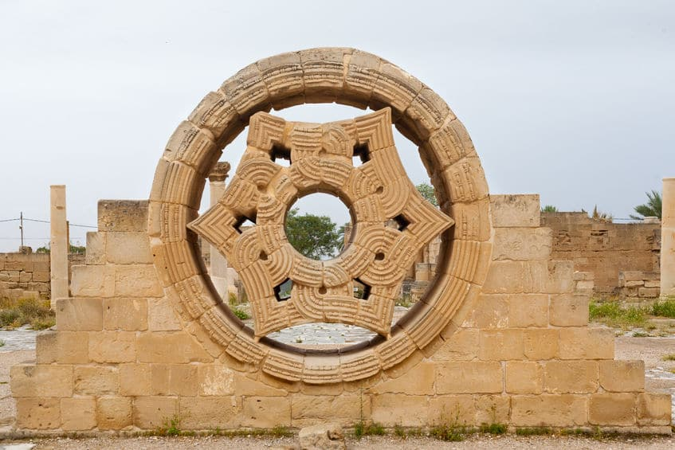
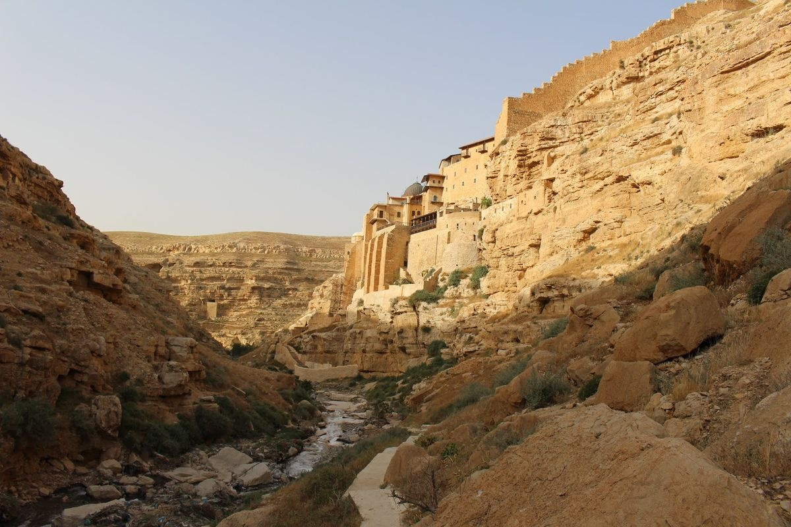

قصر هشام
يقع قصر هشام في مدينة أريحا بفلسطين، وهو أحد أبرز المعالم الأثرية الإسلامية. بُني في عهد الخليفة الأموي هشام بن عبد الملك في القرن الثامن الميلادي، ويتميز القصر بعمارة فريدة وزخارف رائعة تعكس إبداع الحضارة الأموية. أبرز ما يميزه لوحة الفسيفساء الضخمة التي تعتبر من الأجمل في العالم، وتظهر نقوشًا هندسية ونباتية رائعة.
اضغط للذهاب الى الموقع على الخريطة

وادي القلط
وادي القلط هو وادٍ طبيعي خلاب يقع بين أريحا والقدس، ويشتهر بجماله الطبيعي وتاريخه العريق. يحتوي الوادي على دير القديس جورج الذي يعود للقرن الخامس الميلادي، ويعتبر مزارًا سياحيًا ودينيًا مميزًا. يُعد الوادي مكانًا مثاليًا لمحبي الطبيعة والمغامرة، حيث يضم مسارات للمشي وسط المناظر الطبيعية الساحرة.
اضغط للذهاب الى الموقع على الخريطة
متحف الفسيفساء
يُعد متحف الفسيفساء في أريحا من أبرز المعالم الثقافية في المدينة. يحتوي المتحف على مجموعة رائعة من اللوحات الفسيفسائية التي تمثل تاريخ المنطقة وثقافتها عبر العصور. يعكس المتحف الفن الفريد الذي ميز الحضارات القديمة في فلسطين، مما يجعله وجهة لا غنى عنها لعشاق التاريخ والفنون.
اضغط للذهاب الى الموقع على الخريطة